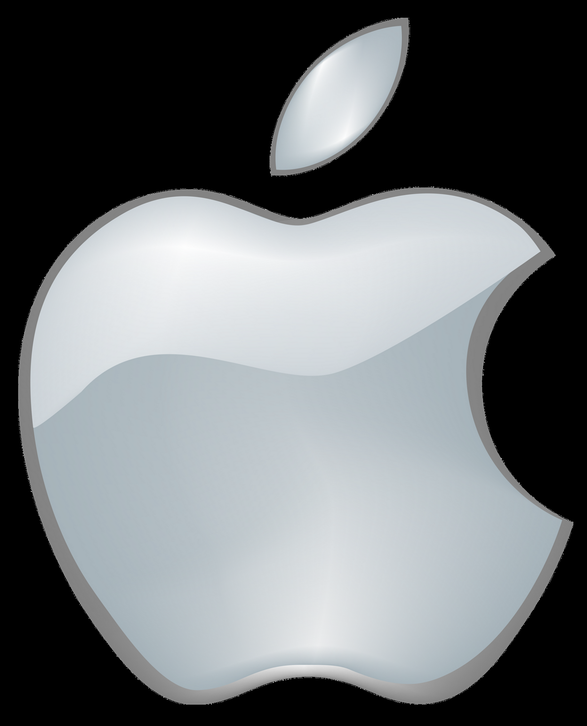

| Home | Biografie | Filmpje | Bekend door | Contacten | Quizz |
Steve jobs is bekend door het bedrijf apple pixar en neXt

Apple is een computerbedrijf die apparaten verkopen bijv. : een "Iphone, Macbook enz." .
Apple is opgericht in Californië 1 april 1976
In 1985 nam Steve Jobs de graphics group over van Lucasfilm hiervoor betaalde hij 5 miljoen dollar aan George Lucas en investeerde daarna nog 5 miljoen im het bedrijf.
Steve Jobs heeft een tweede computerbedrijf gestart genaamd NeXt. NeXt was in 1985 opgericht door Steve Jobs. NeXt is niet alleen een computerbedrijf die hardware verkoopt maar ook NeXTStep-besturingsystemen die werden verkocht aan bijv. OPENSTEP.
NeXt ging in 1993 uit de hardwaremarket en in 1997 werd het overgenomen door Apple. Al leekt het meer op dat NeXt Apple overnam ,omdat de Apple management werd overgenomen door het NeXt management, Sommige mensen zeggen "Apple betaald NeXt om Apple te kopen."